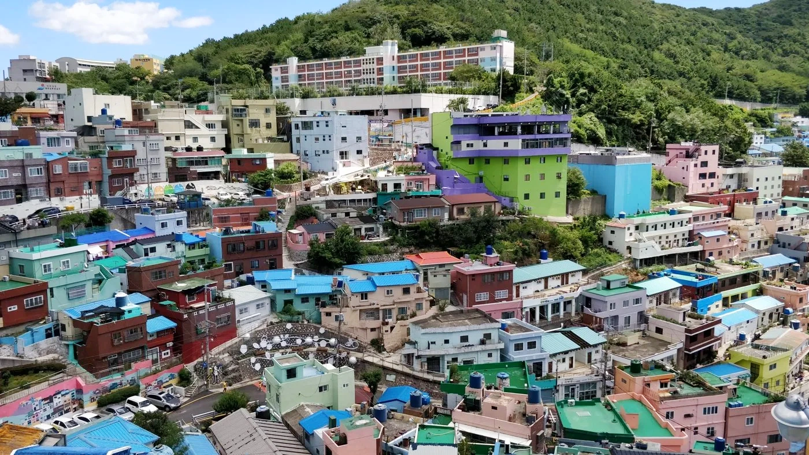
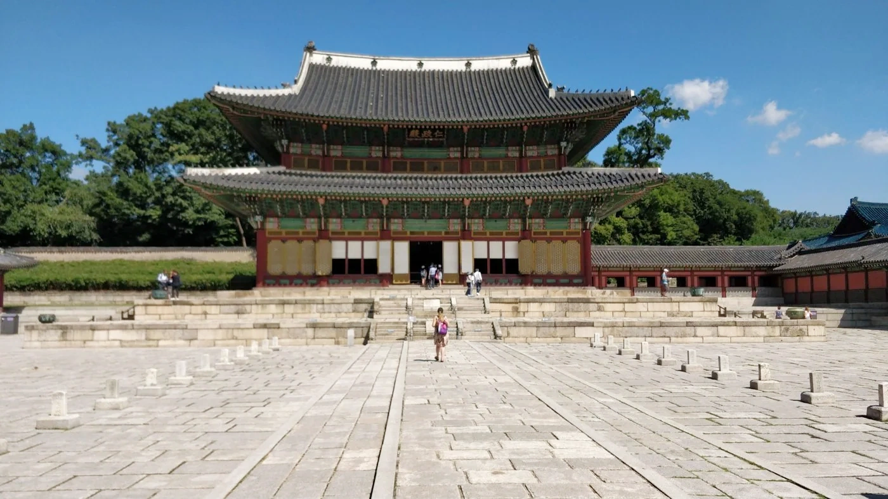
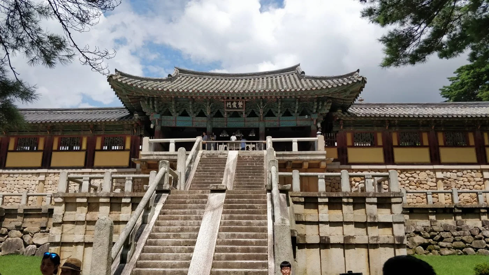
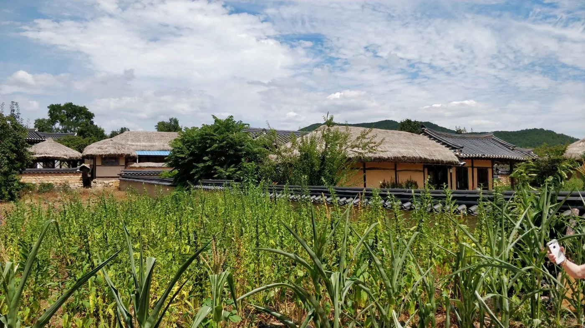
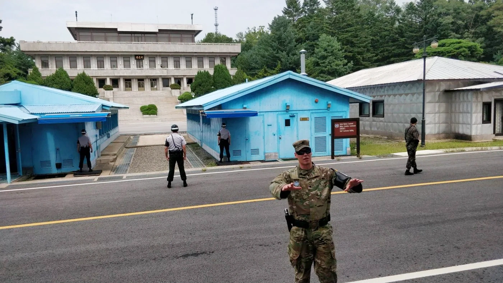
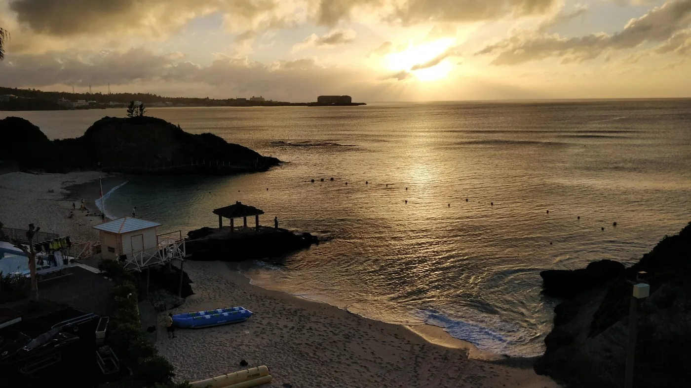

11.08 — 31.08 / 2018
Corea
i Okinawa2018
De Seül al blau d’Okinawa.
Palaus i pobles tradicionals, mercats, records compartits i immersions al Pacífic. El nostre quadern de Corea i Okinawa.
Obre el quadern ↓
Gamcheon / Busan · 2018El viatge, capítol a capítol
06 / 407 fotografies · 3 vídeos
01Seül
↗Palaus, barris hanok i la ciutat contemporània. També Incheon i els darrers dies a Seül.
101 fotografies
02Gyeongju
↗Temples, tombes reials i nits en un hanok: records de l’antic regne de Silla.
32 fotografies 03
03Busan
↗Els colors de Gamcheon, els mercats de peix i els temples a la vora del mar.
73 fotografies
04El centre: Andong i Suwon
↗Pobles tradicionals, màscares, barbacoes i les muralles de Suwon.
77 fotografies
05Zona desmilitaritzada
↗Imjingak, Dorasan i Panmunjom: una jornada a la frontera entre les dues Corees.
26 fotografies
06Okinawa
↗Busseig, platges, castells i records de la guerra a les illes japoneses.
98 fotografies · 3 vídeosTot el recorregut, al mapa
Les fotografies geolocalitzades i els llocs del viatge, amb un color per capítol.